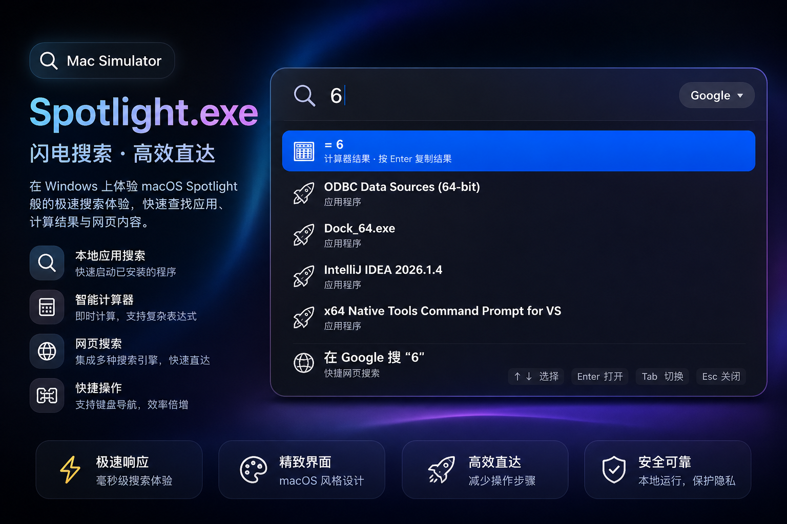

Mac Simulator 开发 Wiki
Mac 桌面仿真模拟器 | 官方规范与维护文档
1. 项目概述
Mac Simulator 是专注于还原 macOS 核心桌面交互体验的桌面应用组件集合。目前重点包含系统级响应的 Spotlight 聚焦搜索 以及顶部 WinIsland 灵动岛 动态交互模块。
📌 设计理念： 高度还原 macOS 毛玻璃高斯模糊（Backdrop Filter）、拟态极简微交互，并支持原生快捷键无缝唤醒。
2. Spotlight 聚焦搜索
Spotlight 为系统提供了一个居中弹出的全局快捷搜索框，可快速进行应用检索与命令响应。

📷 图 1.1：Spotlight 聚焦搜索框 UI 运行效果展示 (中文版)
核心特性：
- 高优先级快捷唤醒： 监听系统全局按键，一键调出。
- 动态遮罩与居中渲染： 唤醒时自动聚焦输入框，并生成暗色背景遮罩。
3. WinIsland 灵动岛
位于屏幕顶部的动态胶囊模块，支持多种状态切换与系统消息通知展示。
核心形态：
- 胶囊收起态（Idle）： 挂载于状态栏中央，静默不占空间。
- 展开通知态（Expanded）： 触发系统级消息事件时，平滑伸展展开。
4. 系统快捷键指南
| 快捷键组合 | 触发动作 | 关联模块 |
|---|---|---|
| Ctrl + Shift + Space | 显示 / 隐藏 Spotlight 聚焦搜索框 | Spotlight |
| Esc | 强行关闭当前激活的 Spotlight 窗口或弹窗 | 全局控制 |
5. 常见问题与排查 (Troubleshooting)
⚠️ 快捷键按了没反应？
1. 请确认当前窗口是否已获得焦点（Focus）。
2. 检查是否有其他后台软件占用或冲突了 Ctrl + Shift + Space 快捷键。
6. 资源与文件架构
Mac-Simulator/
├── favicon.png # Logo 图标
├── spotlight_cn.png # Spotlight 效果图 (中文)
├── spotlight_us.png # Spotlight 效果图 (英文)
├── spotlight_pt.png # Spotlight 效果图 (葡萄牙语)
├── wiki # 项目说明文档
└── ...